Linux 系統監控命令使用筆記 (ps,top,htop)
Contents
前言
每次想要查系統資源使用狀況都要 Google 一次 (除了 ps -aux, top, htop 很直覺的以外啦)，不如趁這次偕同 RD team 查找 iowait 高的原因整理一篇自己的筆記節省時間。
【常用指令】 cheatsheet
ps 常用指令
- 以
%CPU排序前 5 名
|
|
- 以
%MEM排序前 5 名
|
|
[DigitalOcean] Linux ps command - 20 Real Life Examples
top 常用指令
- 以
%CPU排序 (或者在互動模式下按P)
|
|
- 以
%MEM排序 (或者在互動模式下按M)
|
|
- 高亮資源排序欄位
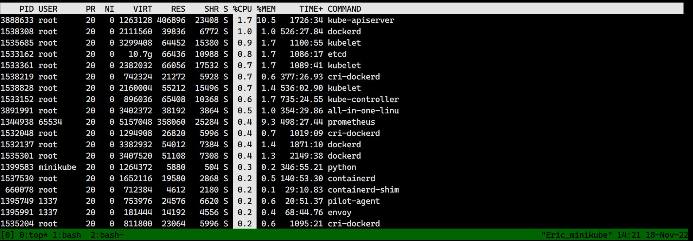
▲ 按下 b 開啟高亮模式後，接著 按下 x (按下 y 則是顯示 running task)
- 切換
%CPU(s)顯示方式
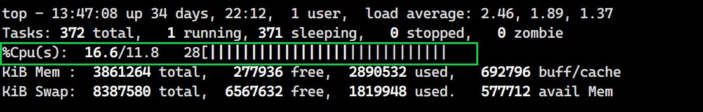
▲ 按下 t 即可切換顯示百分比
- 切換
Memory、SWAP顯示方式
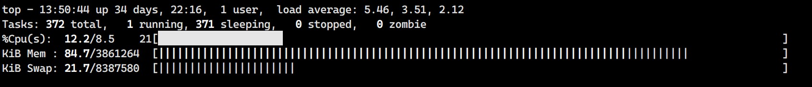
▲ 按下 m 即可切換顯示百分比
iostat 常用指令
- 每
20s顯示一次系統 I/O 狀態
|
|
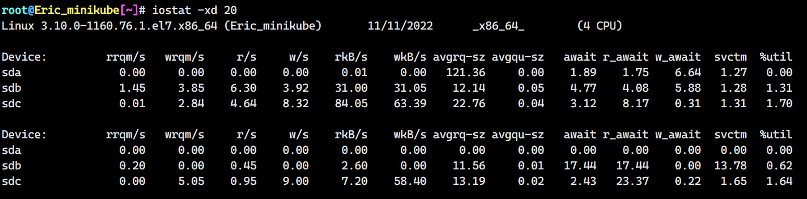
htop 常用指令
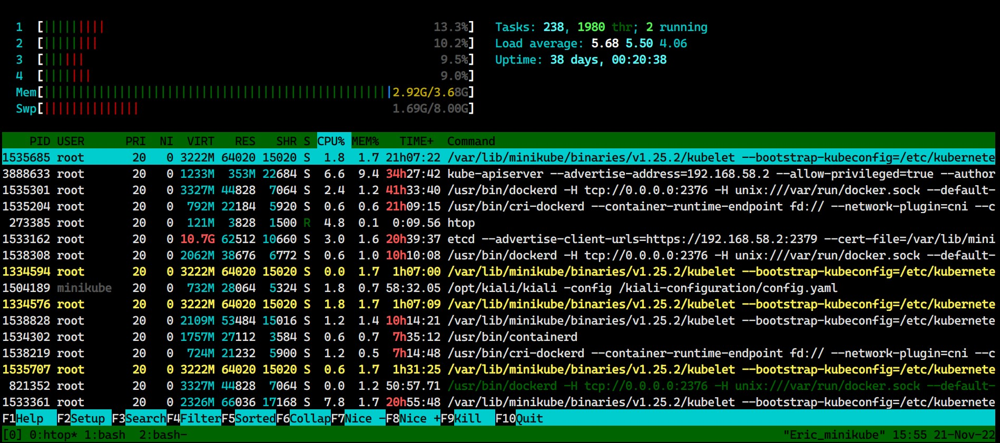
▲ 按下 c 可以高亮 (tag) 選取 process 與其 child process，若只要選擇單個 process 可以使用 Space。 按下 U 即可 un-tag 所有已高亮的項目。
top 介紹
About Process
再開始說明 top 欄位之前我想先補充一些恐龍書的知識! 老師對不起我忘了，能夠還我學費嗎
- Process 是電腦中已執行 Program 的實體，每一個 Process 互相獨立。
- Process 需要一些資源才能完成工作，如 CPU、記憶體、檔案以及 I/O 裝置。
- Process 不是基本執行單位，而是 Thread (執行緒) 的容器。 (註: 換句話說 thread 才是調度進 CPU 的單位)
- 每個 Process 由一個 Memory Space 和一個以上的 Thread 所組成。
引述自 【恐龍】理解 Process & Thread
進階閱讀 [為什麼需要 process/connection pool] 30-09之應用層的兩個池 - 進 ( 線 ) 程池與連線池
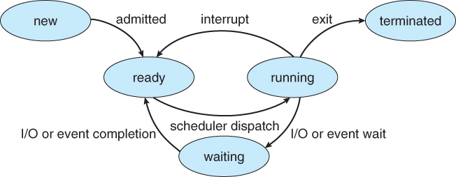
▲ 每個 Process 都會需要在不同的 state 中切換，就有了以下的 State Transition Diagram。圖片/引述 來源 - 杰哥的考研紀錄
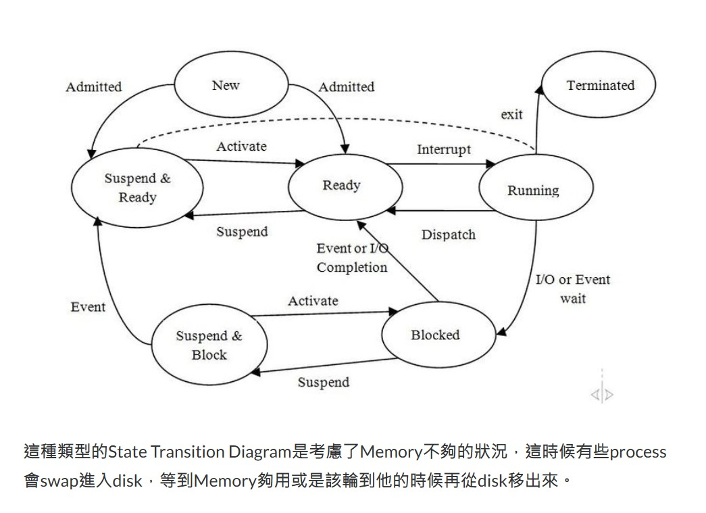
▲ process 會因為沒有足夠的 memory 直接被分配到 swap，就必須等待 memory 足夠才會被從 disk 調出來。 圖片/引述 來源 - 杰哥的考研紀錄
top 欄位介紹
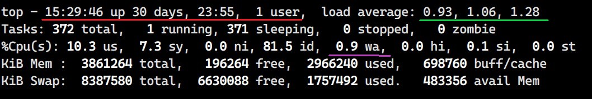
top最上方的欄位顯示 system time (15:29:46)、system 已經運作多久30 days 23:55、目前線上人數 (是 shell login 喔，不是服務線上人數 XD)- load average 則是 1, 5, 15 分鐘 CPU 的平均負載
- Tasks 顯示系統總共有多少 process 存在 ( 按下
H可以切換到 thread 模式 ) %CPU(s)告知 CPU 使用率us代表 user ( 不包含 nice 被調整的 prcoess )sy代表 kernel processni代表 nice 被調整的 prcoessid代表 idle 閒置wa代表 I/O wait (也是最常看的)hi硬體中斷 (hardware interrupts)si軟體中斷 (software interrupts)sttime stolen from this vm by the hypervisor，中文我想翻譯成「超賣值」當這個數值越高代表虛擬化底層 CPU 資源壅擠
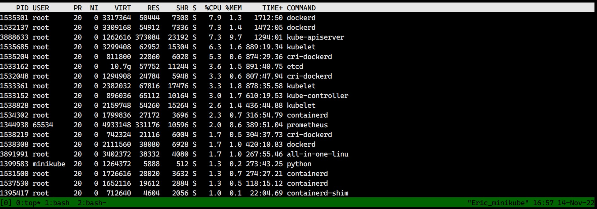
PIDProcess IDUSEReffective username (能夠對應到 user ID 的)PR調度優先值 scheduling priorityNInice 值 ( 越低越優先，預設是零，能被使用者手動更改 )
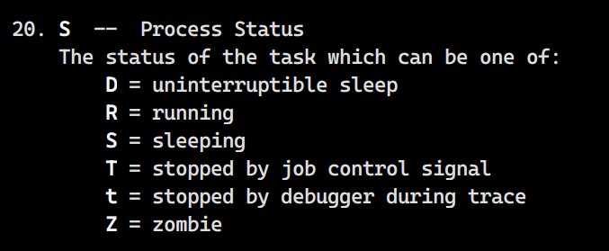
▲ S 欄位代表 process state
VIRT虛擬記憶體大小 Virtual Memory Size (KiB)RES實體記憶體大小 Resident Memory Size (KiB), The non-swapped physical memory a task is using.SHR共享記憶體大小 Shared Memory Size (KiB)
一般操作
R: 反向排序Enter/Space: 刷新畫面 (預設3s更新一次)d/s: 設定刷新間隔B: 數字使用粗體 (個人無感)I: Irix mode On/Off (當 On 時%CPU上限會變成100% * cores。Off 則稱作Solaris Mode上限是 100%)V: 以樹狀模式顯示 (註: 無法與資源排序一起使用)L: 查詢字串，搭配&使用
參考資料
htop 介紹
有關於 htop 的介紹，下面兩篇文章都寫得非常清楚了，個人覺得沒必要自己再寫一次! 我就只整理常用的部分~
凍住! 不許走~
不管是 top 或者 htop 如果想要凍住當前畫面，可以 按下 ctrl + s 來凍結畫面 ，不過也無法與 command 互動~ 按下 ctrl + q 釋放。
How to freeze the list of processes in htop?
iostat 查看 I/O 狀態
- RHEL / CentOS 7 預設並沒有安裝
iostat指令，可以透過yum安裝或者rpm(所需相依套件原生應該有，在 CentOS 7.9 2009 試過)
|
|
|
|
[pkgs.org] sysstat-10.1.5-19.el7.x86_64.rpm
- On Debian / Ubuntu / Linux Mint
|
|
-x選項顯示更多-d只顯示 device 資訊 (不顯示 CPU 使用資訊)
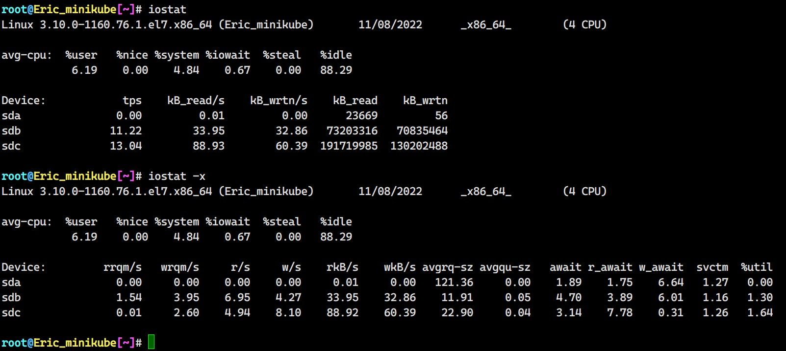
rrqm/s: 每秒 I/O merge read，Linux OS 會將數個 I/O request merge 成一個向更底層請求 (例如: driver)wrqm/s: 每秒 I/O merge writer/s: 每秒 read request (merge 之後) 完成數w/s: 每秒 write request (merge 之後) 完成數rkB/s: 每秒讀取 (read) 吞吐量，read kilobyte per secondwkB/s: 每秒讀取 (write) 吞吐量，write kilobyte per secondavgrq-sz: 平均每個讀取請求 (read request) 帶多大的 size，單位是 sectors。 The average size (in sectors) of the requests that were issued to the device.avgqu-sz: The average queue length of the requests that were issued to the device.await: 當一個 I/O request 送到 device 後平均耗費多少時間處理，包含列隊等待時間! 單位是msr_await: 當一個 I/O read request 送到 device 後平均耗費多少時間處理，包含列隊等待時間! 單位是msw_await: 當一個 I/O write request 送到 device 後平均耗費多少時間處理，包含列隊等待時間! 單位是mssvctm: 未來版本將會移除該項目，請忽略!%util: I/O 頻寬使用百分比，最高 100%
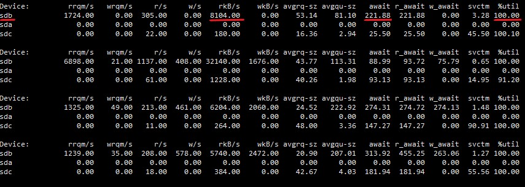
▲ 上圖 sdb 是 swap 分區，因為 memory overflow 導致 iowait 高 (圖中看不到)。
參考資料:
iostat command in Linux with examples
Linux系統效能分析與探討 - [18] 更豐富的iostat內容
額外補充
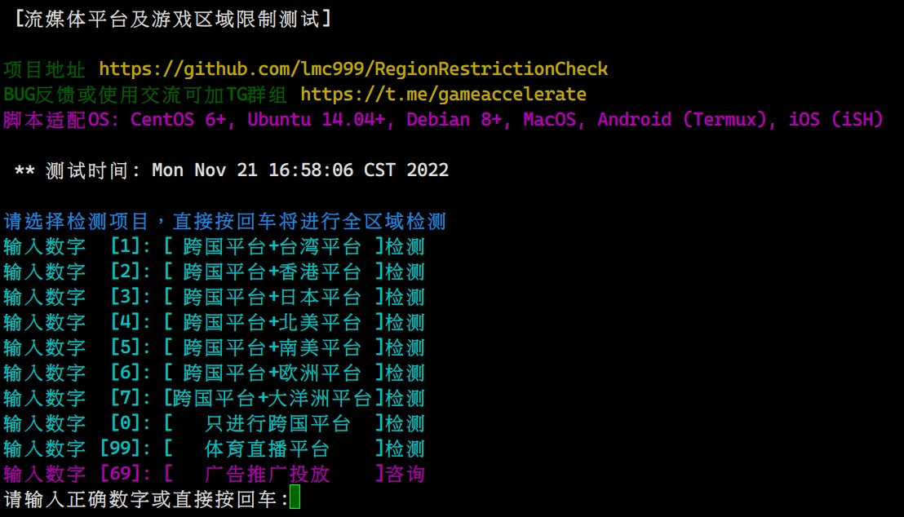

Author 老柯
LastMod 2022-11-21 (23f530f)